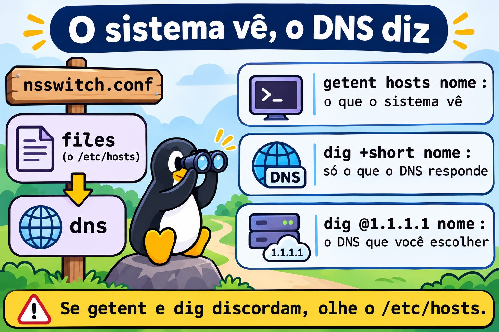

Aula 2.4 · Rede no dia a dia
Quarta aula do Módulo 2. O chamado chega de três jeitos: "a internet caiu", "o sistema não abre" e "o servidor sumiu da rede". Quase nunca é o que o cliente diz. Um nome que não resolve parece internet caída. Um serviço que só escuta na própria máquina parece servidor fora do ar. Um IP posto à mão parece funcionar até o próximo boot. Hoje você monta uma escada de seis degraus e sobe sempre na mesma ordem: placa, endereço, rota, nome, porta, aplicação. O primeiro degrau que falha é o problema. No fim, você lê uma mensagem de erro de rede e já sabe em que degrau olhar.
| Ficha | Aula 2.4 |
|---|---|
| Módulo | M2 · Sistema, usuários e permissões, aula 4 de 8 |
| Quando | Semana 5 |
| Ao final você consegue | Ler a configuração de rede de qualquer servidor com ip, hostnamectl e /etc/resolv.conf; diagnosticar "sem rede" degrau por degrau; ver quem escuta em que porta e em que endereço com ss; testar uma porta de outra máquina sem instalar nada; explicar a diferença entre getent e dig; mudar um endereço de forma temporária com ip e permanente com nmcli; ler o que cada mensagem de erro diz sobre o degrau que falhou |
| Pré-requisitos | Aula 2.3 (processos, PID; o journalctl); Aulas 1.5 e 1.6 (grep, awk simples, pipes) |
| Tempo | Cerca de 2h |
| Snapshots | m2a4-inicio e m2a4-fim nas duas VMs |
1 · Aquecimento
Três perguntas, de cabeça. Escreva as respostas; o Gabarito confere no fim.
- No Windows, o
ipconfig /allmostra endereço, máscara, gateway e DNS numa tela só. Palpite: no Linux existe um comando que mostra os quatro juntos? - O
ping 1.1.1.1responde, mas o navegador diz "servidor não encontrado". Palpite: o que está quebrado? - Você muda o IP de um servidor com um comando, testa e funciona. Palpite: depois do próximo boot, ele continua com o IP novo?
2 · Por que importa
Rede é o assunto em que o técnico mais chuta. Reinicia o serviço, reinicia o roteador, reinicia o servidor, e às vezes volta, sem ninguém saber por quê. O problema volta na semana seguinte. Quem resolve de verdade não sabe mais protocolos: tem uma ordem e não pula degrau. Se o servidor não tem IP, não adianta testar DNS. Se o nome não resolve, não adianta olhar o firewall do site.
A segunda coisa que separa o profissional é ler a mensagem de erro inteira. "Connection refused", "No route to host", "Name or service not known" e um comando que simplesmente fica parado são quatro problemas diferentes, em quatro degraus diferentes. A mensagem já diz onde olhar; quase ninguém lê.
E há a armadilha do temporário. O comando ip muda a rede na hora, e o que ele muda some no boot. O técnico conserta à noite com ip, o servidor reinicia no domingo por uma atualização, e segunda de manhã está tudo quebrado de novo. Hoje você aprende a diferença entre o que está valendo agora e o que está gravado, e a conferir as duas coisas.
3 · Modelo mental
A rede é uma escada. Suba de baixo para cima, um degrau por vez. O primeiro que falha é o problema; os de cima falham por consequência.
5 Aplicação curl -v, o próprio programa "o serviço responde direito?"
4 Porta ss -tlnp (no servidor) "alguém escuta? em que endereço?"
/dev/tcp ou nc (de fora) "consigo chegar até a porta?"
3 Nome getent hosts nome "o nome vira IP?"
2 Rota ip route; ping no gateway "sei sair da minha rede?"
1 Endereço ip -br addr "tenho IP? na rede certa?"
0 Placa ip -br link "a placa existe e está UP?"Quatro ideias carregam a aula:
| Ideia | O que quer dizer | Consequência |
|---|---|---|
| Escada | Cada degrau depende dos de baixo | Um DNS "fora" pode ser uma rota errada; teste de baixo para cima |
| Agora × gravado | O kernel guarda a configuração que vale agora; o NetworkManager (ou o ifupdown) guarda a que volta no boot | ip muda só o agora; nmcli con mod muda só o gravado, até você aplicar |
| Nome tem ordem | O sistema procura um nome primeiro em /etc/hosts e depois no DNS, na ordem do /etc/nsswitch.conf | getent mostra o que os programas veem; dig só pergunta ao DNS |
| Escutar tem endereço | Um serviço escuta numa porta e num endereço: 127.0.0.1 só para a própria máquina, 0.0.0.0 para todas as interfaces | "A porta está aberta" não basta: aberta para quem? |

4 · Conceito em camadas
Essencial
Quem eu sou na rede. Quatro comandos respondem tudo o que o ipconfig /all responde:
hostnamectl # o nome da máquina, o sistema, se é VM
ip -br link # as placas: nome, estado (UP/DOWN), MAC
ip -br addr # as placas com os endereços, um por linha
ip route # as rotas; a linha "default via" é o gateway
cat /etc/resolv.conf # os servidores DNS ("nameserver") e o domínio de buscaO -br (brief) deixa uma linha por placa. Sem ele, ip addr mostra tudo, incluindo IPv6, tempo de validade e flags. Use o curto para olhar e o longo quando precisar de detalhe.
$ ip -br addr
lo UNKNOWN 127.0.0.1/8 ::1/128
enp6s18 UP 10.1.0.51/24 fe80::be24:11ff:fe2a:51/64| Pedaço | Quer dizer |
|---|---|
enp6s18 | O nome da placa: en = Ethernet, p6s18 = onde ela está no barramento. Nomes antigos eram eth0 |
UP | A placa está ligada e com sinal. DOWN = desligada; NO-CARRIER (no ip link) = ligada, sem cabo ou sem sinal |
10.1.0.51/24 | O endereço e a máscara em notação curta: /24 = 255.255.255.0, a rede vai de 10.1.0.0 a 10.1.0.255 |
fe80::.../64 | O endereço IPv6 de enlace local, que toda placa cria sozinha; só vale dentro da rede local |
lo | A interface de loopback: a máquina falando com ela mesma, sempre 127.0.0.1 |
Testar se chega. ping manda pacotes ICMP e espera resposta. Sempre com -c, ou ele não para:
ping -c 3 10.1.0.52 # 3 pacotes e paraUm ping que responde prova que os degraus 0 a 2 funcionam até aquele endereço. Um ping que não responde não prova que a máquina está fora: muitos firewalls bloqueiam ICMP. Sem resposta, suba para o teste de porta.
Quem escuta. O ss mostra as conexões e as portas abertas:
sudo ss -tulpn # t=TCP u=UDP l=escutando p=processo n=números (sem tradução)
ss -tn # conexões TCP estabelecidas agoraNetid State Local Address:Port Peer Address:Port Process
tcp LISTEN 0.0.0.0:22 0.0.0.0:* users:(("sshd",pid=812,fd=3))
tcp LISTEN [::]:22 [::]:* users:(("sshd",pid=812,fd=4))
udp UNCONN 127.0.0.1:323 0.0.0.0:* users:(("chronyd",pid=701,fd=5))A coluna que importa é Local Address. 0.0.0.0:22 e [::]:22: o SSH escuta em todos os endereços IPv4 e IPv6, qualquer um alcança. 127.0.0.1:323: o chronyd escuta só para a própria máquina; de fora, ninguém chega. Sem sudo, a coluna Process vem vazia para processos de outros usuários.
Achar um nome. getent hosts pergunta do mesmo jeito que os programas perguntam:
getent hosts rockylinux.org
getent hosts localhostSe o getent não responde, nenhum programa vai conseguir usar aquele nome.
Intermediário
nmcli, o NetworkManager pela linha de comando. No Rocky, quem guarda a configuração de rede é o NetworkManager. Ele trabalha com conexões (perfis gravados) aplicadas a dispositivos (as placas):
nmcli device status # as placas e a conexão aplicada em cada uma
nmcli connection show # os perfis; os ativos têm DEVICE preenchido
nmcli connection show "NOME" | grep ipv4 # o que o perfil diz sobre IPv4O nome da conexão nem sempre é o nome da placa: pode ser enp6s18, System enp6s18 ou Wired connection 1. Descubra antes de mexer:
CON=$(nmcli -g NAME,DEVICE connection show --active | awk -F: '$2=="enp6s18" {print $1}')
echo "$CON"Mudar é sempre em dois tempos: gravar e depois aplicar.
sudo nmcli connection modify "$CON" +ipv4.addresses 192.0.2.51/24 # grava (o + acrescenta)
sudo nmcli connection up "$CON" # aplica| Propriedade | Para quê |
|---|---|
ipv4.method | auto (DHCP) ou manual (fixo) |
ipv4.addresses | Endereços com máscara, separados por vírgula; + acrescenta, - remove |
ipv4.gateway | O gateway padrão |
ipv4.dns | Os servidores DNS |
ipv4.ignore-auto-dns | yes = ignora o DNS que vem do DHCP |
connection.autoconnect | yes = sobe sozinha no boot |
O perfil fica gravado em /etc/NetworkManager/system-connections/NOME.nmconnection, um arquivo de texto no formato de seções. Servidores atualizados de versões antigas podem ter o formato antigo, em /etc/sysconfig/network-scripts/ifcfg-*. O nmcli lida com os dois; não edite o arquivo à mão se o nmcli resolve.
O que vale agora × o que está gravado. O ip fala direto com o kernel:
sudo ip addr add 192.0.2.51/24 dev enp6s18 # vale agora; some no boot ou no próximo "nmcli con up"
sudo ip addr del 192.0.2.51/24 dev enp6s18Use ip para testar uma ideia em segundos. Use nmcli para deixar valendo. Depois de qualquer mudança permanente, confira as duas coisas: ip -br addr (o agora) e nmcli connection show "$CON" | grep ipv4.addresses (o gravado).
A ordem dos nomes. O arquivo /etc/nsswitch.conf diz onde procurar:
hosts: files dns myhostnamefiles é o /etc/hosts; dns são os servidores do /etc/resolv.conf. Quem responde primeiro ganha. Uma linha esquecida no /etc/hosts vence o DNS da empresa inteira, e só aquela máquina fica "errada". Por isso existem dois comandos diferentes:
| Comando | Pergunta a | Use para |
|---|---|---|
getent hosts nome | A mesma ordem que os programas usam (/etc/hosts, depois DNS) | Saber o que o sistema vê |
dig nome, dig +short nome | Só ao servidor DNS, ignorando o /etc/hosts | Saber o que o DNS responde |
dig @1.1.1.1 nome | A um servidor DNS escolhido por você | Comparar o DNS da empresa com um de fora |
Se os dois discordam, a resposta está no /etc/hosts. O dig vem no pacote bind-utils (Rocky) ou bind9-dnsutils (Debian).
Testar uma porta de fora, sem instalar nada. O Bash abre uma conexão TCP se você redirecionar para /dev/tcp/HOST/PORTA:
timeout 3 bash -c '</dev/tcp/10.1.0.51/22' && echo aberta || echo fechadaCom o nc instalado (nmap-ncat no Rocky, netcat-openbsd no Debian): nc -zv 10.1.0.51 22. Para web, curl -v http://host:porta/ mostra cada etapa: resolução, conexão, pedido, resposta.
O caminho. tracepath 1.1.1.1 mostra os roteadores até o destino, um por linha, sem precisar de root. Onde os números param, o caminho parou. O mtr, se instalado, faz o mesmo ao vivo.
O nome da máquina. sudo hostnamectl set-hostname rocky-lab grava o nome em /etc/hostname e aplica na hora. O nome que aparece no prompt muda no próximo login.

Ponte Windows
| No Windows | No Linux | O que muda |
|---|---|---|
ipconfig /all | ip -br addr, ip route, cat /etc/resolv.conf | Três comandos curtos em vez de um longo |
ipconfig /release e /renew | sudo nmcli connection up "$CON" | Reaplica o perfil inteiro, incluindo o DHCP |
ipconfig /flushdns | Em geral, nada: Rocky e Debian não guardam cache de DNS por padrão | Se o systemd-resolved estiver ativo: resolvectl flush-caches |
netstat -ano | sudo ss -tulpn | O ss já mostra o nome do processo, não só o PID |
Test-NetConnection host -Port 443 | timeout 3 bash -c '</dev/tcp/host/443'; nc -zv host 443 | |
tracert | tracepath, traceroute, mtr | |
nslookup | dig, host; getent hosts para ver o que o sistema usa | |
C:\Windows\System32\drivers\etc\hosts | /etc/hosts | Mesma ideia, mesmo perigo |
| Propriedades do adaptador, IPv4 | nmcli connection modify | Gravar e aplicar são dois passos |
| Firewall do Windows Defender | firewalld (Rocky); nftables direto (Debian) | Veremos o firewall a fundo no módulo de segurança |
Avançado
As mensagens de erro dizem o degrau. Decore esta tabela; ela resolve metade dos chamados:
| Mensagem | O que aconteceu | Degrau |
|---|---|---|
Name or service not known, Temporary failure in name resolution, Could not resolve host | O nome não virou IP | 3 · Nome |
Network is unreachable | Não há rota para aquela rede: sem gateway ou sem IP | 1 ou 2 |
No route to host | Na rede local, ninguém respondeu ao ARP; ou um firewall rejeitou o pacote (o firewalld responde assim) | 2, ou firewall |
Connection refused | O pacote chegou à máquina e ninguém escuta naquela porta, naquele endereço | 4 · Porta |
O comando fica parado e acaba em timed out | Algo no caminho descartou o pacote em silêncio, em geral um firewall | Firewall no caminho |
"Refused" é, curiosamente, uma boa notícia: a máquina está viva e a rede chegou até ela.
ARP, os vizinhos. Dentro da mesma rede, a máquina descobre o MAC do vizinho por ARP antes de mandar qualquer coisa. ip neigh mostra a tabela: REACHABLE é vizinho que respondeu, FAILED é vizinho que não respondeu. Um gateway em FAILED quer dizer que o problema está antes de qualquer roteador: cabo, VLAN, placa virtual na ponte errada.
Máscara errada. Um servidor com 10.1.0.51/16 em vez de /24 acha que 10.1.5.20 é vizinho e tenta falar direto, sem gateway. O ARP não responde e aparece No route to host para uma parte da rede só. Confira a máscara antes de culpar o firewall.
Duas rotas padrão. Se ip route mostra duas linhas default, vale a de menor metric. Servidores com duas placas costumam ter esse problema escondido: funciona até a placa errada ganhar.
IPv6 escondido. Muitos programas tentam IPv6 primeiro. Se o nome resolve para um endereço IPv6 e a rede IPv6 está quebrada, o programa demora para cair no IPv4 e parece lento. getent ahosts nome mostra todos os endereços, v4 e v6; curl -4 força o IPv4 para comparar.
ss com filtro. ss -tn state established '( dport = :443 )' mostra só as conexões de saída para a porta 443; ss -s dá o resumo. Num servidor que "trava", milhares de conexões em TIME-WAIT ou CLOSE-WAIT contam uma história.
5 · Rocky × Debian
| O quê | Rocky 9 | Debian 13 |
|---|---|---|
| Quem guarda a configuração | NetworkManager, sempre | Depende da instalação: servidor sem interface gráfica costuma usar ifupdown; com o NetworkManager instalado, ele assume. Confira com systemctl is-active NetworkManager |
| Onde fica gravada | /etc/NetworkManager/system-connections/*.nmconnection | ifupdown: /etc/network/interfaces e /etc/network/interfaces.d/. NetworkManager: o mesmo lugar do Rocky |
| Aplicar uma mudança | nmcli connection up "$CON" | ifupdown: reiniciar a placa (derruba o SSH) ou reiniciar a máquina |
/etc/resolv.conf | Escrito pelo NetworkManager | Escrito pelo cliente DHCP ou à mão, com ifupdown; pelo NetworkManager, se ele estiver ativo |
systemd-resolved | Não vem ativo | Não vem ativo |
dig | dnf install bind-utils | apt install bind9-dnsutils |
nc | dnf install nmap-ncat | apt install netcat-openbsd |
tracepath | Já instalado (iputils) | apt install iputils-tracepath |
| Firewall ativo depois da instalação | firewalld, que rejeita o que não foi liberado | Nenhum |
ifconfig, netstat, route | Não vêm; pacote net-tools, obsoleto | Não vêm; pacote net-tools, obsoleto |
6 · Lab guiado
Faça cada passo na rocky-lab e repita na debian-lab. Onde o Debian muda, o passo avisa. Mantenha um terminal SSH aberto em cada VM: vários passos testam uma a partir da outra.

Passo 0 · Snapshot
No Proxmox, tire o snapshot m2a4-inicio das duas VMs. Neste lab você mexe na rede por SSH: se perder o acesso, o console do Proxmox e o snapshot são a sua volta.
Passo 1 · Quem sou eu na rede
Na rocky-lab:
hostnamectl
ip -br link
ip -br addr
ip route
cat /etc/resolv.confEscreva uma linha no seu diário, no formato nome · placa · IP/máscara · gateway · DNS. Por exemplo: rocky-lab · enp6s18 · 10.1.0.51/24 · gateway ? · DNS ?. Os ? são o que o seu ip route e o seu resolv.conf responderem. Repita na debian-lab.
Agora descubra quem guarda essa configuração:
systemctl is-active NetworkManager
nmcli device status 2>/dev/nullNa rocky-lab, a resposta é active, e a enp6s18 aparece com uma conexão. Na debian-lab, anote o que aparecer: se o NetworkManager estiver inactive, a configuração está em /etc/network/interfaces:
cat /etc/network/interfaces
ls /etc/network/interfaces.d/Um iface enp6s18 inet dhcp quer dizer DHCP; um iface enp6s18 inet static seguido de address quer dizer IP fixo.
Passo 2 · Subir a escada
Na rocky-lab, um degrau por vez, de baixo para cima:
ip -br link show enp6s18 # 0 · placa UP?
ip -br addr show enp6s18 # 1 · tem IP?
GW=$(ip route | awk '/^default/ {print $3; exit}'); echo "$GW"
ping -c 3 "$GW" # 2 · chego no gateway?
ping -c 3 1.1.1.1 # 2 · saio da rede?
getent hosts rockylinux.org # 3 · o nome vira IP?
curl -sI https://rockylinux.org | head -1 # 5 · o serviço responde?Cada linha que responde libera a de cima. Na debian-lab, troque o nome por debian.org; se o curl faltar, sudo apt install curl.
Se o ping no gateway não responder mas o ping 1.1.1.1 responder, o gateway apenas bloqueia ICMP: o degrau 2 está bom, porque você saiu da rede. É o primeiro exemplo de por que um ping sem resposta não prova nada sozinho.
Decida 1 · Qual degrau. Num servidor de cliente, o ping no gateway responde, o ping 1.1.1.1 responde, e o ping rockylinux.org diz Name or service not known. Onde está o problema?
- A) No degrau 2: a rota padrão está errada.
- B) No degrau 3: a resolução de nomes.
- C) No firewall do site rockylinux.org.
- D) No degrau 0: a placa está com problema intermitente.
Escolha a letra antes de olhar a tabela.
| Se você marcou | Resultado | Por quê |
|---|---|---|
| A | ❌ Errada | O ping 1.1.1.1 respondeu: os pacotes saem e voltam. A rota está boa. |
| B | ✅ Certa | Os degraus 0 a 2 passaram. O que falhou foi transformar o nome em IP. Próximo passo: cat /etc/resolv.conf, getent hosts rockylinux.org e dig rockylinux.org. |
| C | ❌ Errada | O ping nem chegou a mandar pacote para o site: ele não descobriu o endereço. A mensagem é de nome, não de conexão. |
| D | ❌ Errada | Uma placa com problema derrubaria também os dois primeiros ping. |
Para fixar: a mensagem diz o degrau. "Name or service not known" é sempre nome.
Passo 3 · Quem escuta, e para quem
Na rocky-lab:
sudo ss -tulpnPara cada linha, responda três perguntas: qual programa (coluna Process), qual porta e para quem (coluna Local Address). Você deve ver o sshd em 0.0.0.0:22 e [::]:22, e o chronyd em 127.0.0.1:323 e [::1]:323. Depois, as conexões abertas agora:
ss -tn
sudo ss -tnp state established '( sport = :22 )'A segunda linha mostra a sua própria conexão SSH: o seu IP (o do seu PC) na coluna Peer, e o processo sshd que a atende. Repita na debian-lab, onde o SSH aparece como sshd no processo mas a unidade se chama ssh.
Decida 2 · Para quem. O ss -tulpn mostra udp UNCONN 127.0.0.1:323 ... users:(("chronyd",...)). Quem consegue mandar pacotes para essa porta?
- A) Só a própria máquina.
- B) Qualquer máquina da rede 10.1.0.0/24.
- C) Qualquer máquina, desde que o firewall libere a porta 323.
- D) Ninguém, porque o estado é
UNCONN.
Escolha a letra antes de olhar a tabela.
| Se você marcou | Resultado | Por quê |
|---|---|---|
| A | ✅ Certa | 127.0.0.1 é o loopback. O kernel só entrega a esse socket pacotes que nasceram na própria máquina. É assim que o chronyc conversa com o chronyd sem expor nada. |
| B | ❌ Errada | Para isso ele precisaria escutar em 10.1.0.51 ou em 0.0.0.0. |
| C | ❌ Errada | O firewall não muda em que endereço o programa escuta. Abrir a 323 no firewall não faz o chronyd atender de fora. |
| D | ❌ Errada | UNCONN é o estado normal de um socket UDP esperando pacotes: UDP não tem conexão. |
Para fixar: porta aberta é porta e endereço. 127.0.0.1 = só eu; 0.0.0.0 ou [::] = todo mundo que a rede e o firewall deixarem passar.

Passo 4 · Testar uma porta de fora
Agora uma VM testa a outra. Na debian-lab, testando a rocky-lab:
timeout 3 bash -c '</dev/tcp/10.1.0.51/22' && echo aberta || echo fechada
timeout 3 bash -c '</dev/tcp/10.1.0.51/2222' && echo aberta || echo fechadaA 22 responde aberta. A 2222 responde fechada, mas leia a mensagem antes do fechada: deve ser No route to host. Agora o contrário, na rocky-lab, testando a debian-lab:
timeout 3 bash -c '</dev/tcp/10.1.0.52/22' && echo aberta || echo fechada
timeout 3 bash -c '</dev/tcp/10.1.0.52/2222' && echo aberta || echo fechadaA 2222 da debian-lab responde Connection refused. Mesma porta, ninguém escutando nas duas, mensagens diferentes. A diferença é o firewall: a rocky-lab tem o firewalld ativo, que rejeita o que não foi liberado e responde "não há rota". A debian-lab não tem firewall, e o próprio kernel responde "ninguém escuta aqui". Confira:
sudo firewall-cmd --state # na rocky-lab: running
sudo firewall-cmd --list-all # serviços liberados: ssh, cockpit, dhcpv6-clientDecida 3 · Refused. Um cliente diz "o sistema não abre". Da sua máquina, o teste na porta 8443 do servidor responde na hora Connection refused. O que isso diz?
- A) O pacote chegou ao servidor e nenhum programa escuta na 8443 naquele endereço.
- B) Um firewall no caminho está bloqueando a 8443.
- C) O servidor está desligado.
- D) O nome do servidor não resolveu.
Escolha a letra antes de olhar a tabela.
| Se você marcou | Resultado | Por quê |
|---|---|---|
| A | ✅ Certa | "Refused" é a resposta do kernel do servidor: chegou, mas ninguém atende. Vá ao servidor e rode sudo ss -tlnp: o serviço caiu, mudou de porta ou escuta só em 127.0.0.1. |
| B | ⚠️ Pode ser, mas é raro | Um firewall que rejeita com TCP reset também produz "refused". O mais comum é o firewall descartar (o comando fica parado) ou responder "No route to host". Comece pelo ss no servidor. |
| C | ❌ Errada | Desligado, ninguém responderia: daria "No route to host" na rede local ou um tempo esgotado de longe. |
| D | ❌ Errada | Se o nome não resolvesse, a mensagem seria de nome, e o teste nem tentaria conectar. |
Para fixar: refused = chegou e ninguém escuta; no route = ninguém respondeu ou o firewall rejeitou; parado até esgotar = algo descartou no caminho.
Passo 5 · Nomes: o que o sistema vê e o que o DNS diz
Instale o dig nas duas VMs:
sudo dnf install -y bind-utils # rocky-lab
sudo apt install -y bind9-dnsutils # debian-labNa rocky-lab:
grep '^hosts' /etc/nsswitch.conf
cat /etc/hosts
getent hosts rockylinux.org
dig +short rockylinux.org
dig @1.1.1.1 +short rockylinux.orgO getent e o dig concordam: o nome não está no /etc/hosts, então os dois perguntam ao DNS. Agora ensine as VMs a se acharem pelo nome. Na rocky-lab:
echo '10.1.0.52 debian-lab' | sudo tee -a /etc/hostsNa debian-lab:
echo '10.1.0.51 rocky-lab' | sudo tee -a /etc/hostsE compare, na rocky-lab:
getent hosts debian-lab # 10.1.0.52
dig +short debian-lab # nada
ping -c 2 debian-lab # respondeO dig não acha, porque o DNS não conhece a debian-lab; o ping acha, porque usa a mesma ordem do getent. Essas duas linhas no /etc/hosts ficam: na Aula 2.5 você vai usar ssh debian-lab e ssh rocky-lab.
Passo 6 · Um endereço só para agora
Os dois testes seguintes usam a rede 192.0.2.0/24, reservada para documentação: nenhum equipamento real usa esse endereço, então não há risco de conflito. Na rocky-lab:
sudo ip addr add 192.0.2.51/24 dev enp6s18
ip -br addr show enp6s18Na debian-lab:
sudo ip addr add 192.0.2.52/24 dev enp6s18
ping -c 2 192.0.2.51As duas VMs agora conversam por uma segunda rede, na mesma placa. Pergunte ao NetworkManager da rocky-lab se ele sabe disso:
CON=$(nmcli -g NAME,DEVICE connection show --active | awk -F: '$2=="enp6s18" {print $1}'); echo "$CON"
nmcli -g ipv4.addresses connection show "$CON"O 192.0.2.51 não aparece: ele está só no kernel. Reaplique o perfil gravado:
sudo nmcli connection up "$CON"
ip -br addr show enp6s18O endereço sumiu: o NetworkManager trocou o que valia agora pelo que estava gravado. A sua sessão SSH pode congelar por um segundo e volta, porque o endereço principal é o mesmo. Na debian-lab, tire o seu à mão:
sudo ip addr del 192.0.2.52/24 dev enp6s18Passo 7 · Um endereço que sobrevive
Na rocky-lab, grave e depois aplique:
sudo nmcli connection modify "$CON" +ipv4.addresses 192.0.2.51/24
nmcli -g ipv4.addresses connection show "$CON" # gravado
ip -br addr show enp6s18 # ainda não vale
sudo nmcli connection up "$CON"
ip -br addr show enp6s18 # agora valeVeja onde ficou gravado:
sudo grep -A6 '^\[ipv4\]' /etc/NetworkManager/system-connections/*.nmconnectionSe a sua conexão usa DHCP (method=auto), o endereço fixo convive com o que vem do DHCP. Agora a prova de verdade:
sudo systemctl rebootVolte pelo SSH e confira ip -br addr show enp6s18: o 192.0.2.51 está lá.
Na debian-lab, se o NetworkManager estiver ativo, faça igual. Se for ifupdown, crie o arquivo /etc/network/interfaces.d/lab-extra com:
iface enp6s18 inet static
address 192.0.2.52/24Confira que o /etc/network/interfaces tem a linha source /etc/network/interfaces.d/* (o padrão do Debian), reinicie com sudo systemctl reboot e confira com ip -br addr. O ifupdown aceita mais de um bloco iface para a mesma placa e aplica os dois.
Teste uma a partir da outra: da debian-lab, ping -c 2 192.0.2.51.
Decida 4 · O conserto que não durou. Num servidor de cliente, você corrigiu o IP à noite com sudo ip addr add e tirou o antigo com ip addr del. Funcionou. Depois do reboot de domingo, o IP antigo voltou. O que você faz agora?
- A) Gravar a mudança no perfil (
nmcli connection modify), aplicar comnmcli connection upe conferir o agora e o gravado. - B) Rodar os mesmos
ip addrde novo e pôr no/etc/rc.localpara rodar a cada boot. - C) Editar o
/etc/resolv.confcom o IP novo. - D) Desligar o NetworkManager para ele parar de desfazer a mudança.
Escolha a letra antes de olhar a tabela.
| Se você marcou | Resultado | Por quê |
|---|---|---|
| A | ✅ Certa | Quem decide o que volta no boot é o perfil. Gravou, aplicou, conferiu com ip -br addr e com nmcli -g ipv4.addresses connection show. |
| B | ⚠️ Funciona, mas | Funciona até o NetworkManager reaplicar o perfil (um nmcli con up, uma queda de link) e apagar o endereço de novo. E o próximo técnico não vai achar a configuração onde ela deveria estar. |
| C | ❌ Errada | O resolv.conf guarda os servidores DNS, não o endereço da máquina. |
| D | ❌ Errada | Sem o NetworkManager, no boot ninguém configura a placa: o servidor some da rede de vez. |
Para fixar: ip = agora. nmcli connection modify = gravado. nmcli connection up = aplica o gravado. Depois de mudar, confira os dois.
Limpe, para deixar as VMs como estavam. Na rocky-lab:
sudo nmcli connection modify "$CON" -ipv4.addresses 192.0.2.51/24
sudo nmcli connection up "$CON"
ip -br addr show enp6s18Na debian-lab, com ifupdown: sudo rm /etc/network/interfaces.d/lab-extra e sudo ip addr del 192.0.2.52/24 dev enp6s18. Com NetworkManager, o mesmo do Rocky.
Passo 8 · O roteiro "estou sem rede"
Junte tudo num roteiro só. Rode na debian-lab, em ordem, e diga em voz alta o que cada linha prova:
ip -br link # 0 · placa UP
ip -br addr # 1 · IP e máscara certos
ip route # 2 · existe "default via"
ping -c 2 "$(ip route | awk '/^default/ {print $3; exit}')"
ping -c 2 1.1.1.1 # 2 · saio da rede
cat /etc/resolv.conf; getent hosts debian.org # 3 · nome vira IP
timeout 3 bash -c '</dev/tcp/debian.org/443' && echo aberta # 4 · chego na porta
curl -sI https://debian.org | head -1 # 5 · o serviço respondeSão oito linhas. Em um servidor de verdade, elas levam menos de um minuto e dizem em que degrau parar. Guarde num arquivo no seu diário; você vai usá-lo mais vezes do que qualquer outro roteiro deste curso.


7 · Quebre e conserte
Quebra A · Só esta máquina não acha o site
O chamado: "a atualização não funciona neste servidor, nos outros funciona". Reproduza na debian-lab:
sudo cp /etc/hosts /etc/hosts.antes-quebra
echo '192.0.2.99 deb.debian.org' | sudo tee -a /etc/hosts
sudo apt updateObserve. O apt update fica tentando e falha em deb.debian.org, com erro de conexão. Mas a rede parece boa:
ping -c 2 1.1.1.1 # responde
dig +short deb.debian.org # um ou mais endereços reaisDiagnostique. Suba a escada. Os degraus 0 a 2 passaram. No degrau 3, compare o que o sistema vê com o que o DNS diz:
getent hosts deb.debian.org # 192.0.2.99
dig +short deb.debian.org # outro endereço
grep '^hosts' /etc/nsswitch.conf # files antes de dns
grep deb.debian.org /etc/hostsO getent e o dig discordam, e é essa discordância que entrega a causa. O nsswitch.conf manda olhar files primeiro; o /etc/hosts tem uma linha para esse nome; o DNS nem é consultado. No mundo real, essa linha é a sobra de uma migração ("aponta para o servidor novo até o DNS propagar"), de um teste antigo ou de um proxy desativado. Ela fica lá por anos, e só aquela máquina fica errada.
Na rocky-lab, a mesma quebra usa o nome mirrors.rockylinux.org e o teste sudo dnf makecache.
Decida A · O conserto. O que você faz?
- A) Apagar a linha errada do
/etc/hosts, conferindo antes de quem ela é e se ainda serve para algo. - B) Trocar o servidor DNS no
/etc/resolv.conf. - C) Limpar o cache de DNS da máquina.
- D) Reiniciar a rede.
Escolha a letra antes de olhar a tabela.
| Se você marcou | Resultado | Por quê |
|---|---|---|
| A | ✅ Certa | A causa é a linha. Tirou, o getent passa a concordar com o dig. Antes de apagar num servidor de cliente, pergunte se alguém ainda depende dela, e anote a mudança. |
| B | ❌ Errada | O DNS está certo: o dig mostrou isso. O sistema nem pergunta ao DNS para esse nome, porque o /etc/hosts responde antes. |
| C | ❌ Errada | Rocky e Debian não guardam cache de DNS por padrão, e o problema não é cache: é uma resposta fixa num arquivo. |
| D | ❌ Errada | O /etc/hosts é lido a cada consulta. Reiniciar a rede não muda o que está escrito nele. |
Para fixar: getent diferente de dig = /etc/hosts (ou outra fonte do nsswitch.conf) respondendo antes do DNS.
Conserte.
sudo sed -i '/deb\.debian\.org/d' /etc/hosts
getent hosts deb.debian.org # agora igual ao dig
sudo apt update
sudo rm /etc/hosts.antes-quebraConfira que as linhas rocky-lab e debian-lab do Passo 5 continuam no arquivo: o sed só apagou a linha com deb.debian.org.
Quebra B · O serviço está rodando, mas ninguém acessa
O chamado: "subimos o sistema novo, no servidor funciona, das estações não abre". Reproduza com um servidor web de teste na rocky-lab. Terminal da rocky-lab:
python3 -m http.server 8080 --bind 127.0.0.1 --directory /tmp &
curl -sI http://127.0.0.1:8080 | head -1 # HTTP/1.0 200 OKNo servidor funciona. Agora da debian-lab, como se fosse uma estação:
curl -sI --max-time 5 http://10.1.0.51:8080 | head -1; echo "rc=$?"
curl -v --max-time 5 http://10.1.0.51:8080 2>&1 | grep -i -E 'connect|refused|route'Observe. Da debian-lab, o curl falha com No route to host.
Diagnostique. A mensagem aponta para o firewall da rocky-lab, que você viu no Passo 4. Mas antes de mexer no firewall, olhe o degrau 4 no próprio servidor:
sudo ss -tlnp | grep 8080
sudo firewall-cmd --list-allSão dois problemas empilhados. O ss mostra 127.0.0.1:8080: o programa só atende a própria máquina. E o firewall-cmd não lista a 8080: mesmo que o programa escutasse em todos os endereços, o firewall rejeitaria. O primeiro problema estava escondido atrás do segundo. Este é o caso mais comum de "subimos o sistema novo": o instalador deixa o serviço em localhost por segurança, e o firewall bloqueia por padrão.
Decida B · O conserto. O que deixa a estação acessar?
- A) Fazer o serviço escutar no endereço da rede (ou em
0.0.0.0) e liberar a porta 8080 no firewall. - B) Só liberar a porta 8080 no firewall.
- C) Desligar o
firewalld. - D) Só mudar o serviço para escutar em
0.0.0.0.
Escolha a letra antes de olhar a tabela.
| Se você marcou | Resultado | Por quê |
|---|---|---|
| A | ✅ Certa | Os dois degraus precisam passar: o programa precisa atender pela rede, e o firewall precisa deixar o pacote chegar. |
| B | ❌ Errada | O pacote passa pelo firewall e chega a uma porta onde ninguém escuta naquele endereço. A mensagem muda de No route to host para Connection refused, o que é progresso, mas não resolve. |
| C | ❌ Errada | Continua com o serviço em 127.0.0.1, e você abriu todas as portas do servidor para resolver uma. |
| D | ❌ Errada | O firewall continua rejeitando. A mensagem continua No route to host, e você acha que a mudança não funcionou. |
Para fixar: "no servidor funciona, de fora não" = olhe o endereço no ss e o firewall. Os dois.
Conserte, um degrau por vez, testando da debian-lab depois de cada um para ver a mensagem mudar. Na rocky-lab:
kill %1
python3 -m http.server 8080 --bind 0.0.0.0 --directory /tmp &
sudo ss -tlnp | grep 8080 # 0.0.0.0:8080Na debian-lab: o curl continua com No route to host, porque falta o firewall. Na rocky-lab, libere só até o próximo reload (sem --permanent):
sudo firewall-cmd --add-port=8080/tcpNa debian-lab, o curl -sI http://10.1.0.51:8080 responde HTTP/1.0 200 OK. Agora desfaça tudo na rocky-lab:
kill %1
sudo firewall-cmd --reload # descarta o que não é --permanent
sudo firewall-cmd --list-ports # vazioNum serviço de verdade, a escuta é configurada no arquivo do próprio programa (listen_addresses no PostgreSQL, bind-address no MariaDB, Listen no Apache), e a liberação usa --permanent seguida de --reload. O firewall você estuda a fundo no módulo de segurança.
A lição
As duas quebras enganam do mesmo jeito: o sintoma aparece num degrau e a causa está em outro. Na A, parecia rede ou repositório fora do ar, e era uma linha num arquivo de texto. Na B, a primeira mensagem apontava o firewall, e havia um segundo problema escondido atrás dele. O hábito desta aula: suba a escada inteira, leia a mensagem de cada degrau e, depois de cada conserto, teste de novo para ver se a mensagem mudou. Quando ela muda, você subiu um degrau. Quando não muda, o conserto estava no lugar errado.
8 · Armadilhas
| Você digita ou vê | O que acontece | O certo |
|---|---|---|
ping sem -c | Não para nunca | ping -c 3 |
ping sem resposta e a conclusão "o servidor caiu" | Muitos firewalls bloqueiam ICMP | Teste a porta do serviço |
ifconfig, netstat, route | command not found | ip addr, ss, ip route |
sudo ip addr add como conserto | Some no boot ou no próximo nmcli con up | nmcli connection modify + up |
nmcli connection modify e nada muda | Gravou, mas não aplicou | nmcli connection up "$CON" |
nmcli connection modify ... ipv4.addresses X sem + | Substitui todos os endereços: o principal some e o SSH cai | +ipv4.addresses para acrescentar |
| Mudar o IP principal pelo SSH | Você perde a conexão no up | Faça pelo console, ou tenha o console aberto antes |
Editar /etc/resolv.conf no Rocky | O NetworkManager reescreve no próximo up | nmcli connection modify "$CON" ipv4.dns ... |
dig responde certo e o programa não acha | O dig ignora o /etc/hosts | Compare com getent hosts |
ss -tulpn sem sudo | A coluna Process vem vazia | sudo ss -tulpn |
Ver a porta no ss e concluir que "está aberta" | Pode estar só em 127.0.0.1 | Leia a coluna Local Address |
| "No route to host" e a conclusão "problema de roteamento" | Pode ser o firewalld rejeitando | sudo firewall-cmd --list-all no destino |
| Desligar o firewall para testar e esquecer | O servidor fica todo aberto | Libere a porta sem --permanent, teste, --reload |
Máscara /16 onde a rede é /24 | Parte da rede funciona, parte não | Confira a máscara no ip -br addr |
9 · Quiz
Dez perguntas, sem consultar. Escreva a letra ou a resposta de cada uma e só depois abra o Gabarito.
1. Qual comando mostra o gateway padrão?
- A)
ip route - B)
ip -br addr - C)
ss -r - D)
cat /etc/resolv.conf
2. O ping 1.1.1.1 responde e o curl https://exemplo.com diz Could not resolve host. Em qual degrau está o problema, e quais dois comandos você roda primeiro?
3. Numa máquina, getent hosts intranet responde 10.0.0.5 e dig +short intranet responde 10.0.8.20. Qual dos dois o navegador vai usar, e onde está a causa da diferença?
4. Qual opção muda um endereço IP no Rocky de forma que ele sobreviva ao boot?
- A)
sudo ip addr add 10.1.0.60/24 dev enp6s18 - B)
sudo nmcli connection modify "$CON" ipv4.addresses 10.1.0.60/24e depoissudo nmcli connection up "$CON" - C) Escrever o IP novo no
/etc/resolv.conf - D)
sudo ifconfig enp6s18 10.1.0.60/24
5. O sudo ss -tlnp mostra LISTEN 127.0.0.1:5432 ... users:(("postgres",...)). Quem consegue se conectar a esse PostgreSQL?
6. Explique, em uma frase cada, o que querem dizer Connection refused, No route to host e um teste que fica parado até esgotar o tempo.
7. Qual arquivo define que o /etc/hosts é consultado antes do DNS?
- A)
/etc/hosts - B)
/etc/resolv.conf - C)
/etc/nsswitch.conf - D)
/etc/hostname
8. Escreva o comando que muda o nome da máquina para web01 de forma permanente.
9. Você rodou sudo nmcli connection modify "$CON" +ipv4.addresses 10.1.0.60/24, mas o ip -br addr não mostra o endereço novo. Por quê, e o que falta?
10. Which command lists listening TCP and UDP sockets together with the process that owns each one?
- A)
netstat -r - B)
ss -tulpn - C)
ip -s link - D)
ping -l
10 · Flashcards e cola
Para saber de cor
- A escada: placa (
ip -br link) → endereço (ip -br addr) → rota (ip route) → nome (getent hosts) → porta (ss,/dev/tcp) → aplicação (curl). Suba de baixo para cima e pare no primeiro degrau que falha. ip addr addvale agora;nmcli connection modifygrava; só onmcli connection upaplica o que foi gravado.+ipv4.addressesacrescenta;ipv4.addressessem+substitui.- O nome segue a ordem do
/etc/nsswitch.conf:files(o/etc/hosts) antes dedns. Ogetentsegue essa ordem; odigpergunta só ao DNS. - No
ss, o endereço diz quem pode conectar:127.0.0.1só a máquina;0.0.0.0ou[::]todo mundo que o firewall deixar. - A mensagem de erro aponta o degrau. Leia antes de mexer.
| A mensagem | O degrau | O que quer dizer |
|---|---|---|
Name or service not known, Could not resolve host | 3 · Nome | O nome não virou endereço |
Network is unreachable | 1 ou 2 · Endereço ou rota | Não há endereço ou rota para aquela rede |
No route to host | 2, ou firewall | Sem resposta no ARP, ou um firewall rejeitando (firewalld) |
Connection refused | 4 · Porta | O pacote chegou; ninguém escuta naquela porta e endereço |
Fica parado até timed out | Qualquer um | Algo descartou o pacote em silêncio: firewall com drop, máquina desligada, rota errada no caminho |
Para consultar
| Pergunta | Comando |
|---|---|
| Nome da máquina | hostnamectl; mudar: sudo hostnamectl set-hostname nome |
| Placas e estado | ip -br link |
| Endereços | ip -br addr; detalhe: ip addr show enp6s18 |
| Rotas e gateway | ip route; para onde vai um destino: ip route get 1.1.1.1 |
| Vizinhos (ARP) | ip neigh |
| DNS configurado | cat /etc/resolv.conf; no NM: nmcli dev show enp6s18 | grep DNS |
| Resolver como o sistema | getent hosts nome; IPv4 e IPv6: getent ahosts nome |
| Perguntar só ao DNS | dig +short nome; a outro servidor: dig @1.1.1.1 nome |
| Ordem das fontes de nome | grep '^hosts' /etc/nsswitch.conf |
| Alcance | ping -c 3 destino; caminho: tracepath -n destino |
| Quem escuta | sudo ss -tulpn; conexões abertas: ss -tnp |
| Testar uma porta sem instalar nada | timeout 3 bash -c '</dev/tcp/HOST/PORTA' && echo aberta |
Testar com nc | nc -zv -w 3 HOST PORTA |
| Testar HTTP | curl -sI --max-time 5 http://HOST:PORTA |
| Conexões do NetworkManager | nmcli connection show; ativas: nmcli -g NAME,DEVICE connection show --active |
| Gravar e aplicar | sudo nmcli connection modify "$CON" +ipv4.addresses X/24; sudo nmcli connection up "$CON" |
| DNS pelo NM | sudo nmcli connection modify "$CON" ipv4.dns "1.1.1.1 9.9.9.9" |
| Arquivo da conexão (Rocky) | /etc/NetworkManager/system-connections/*.nmconnection |
| Configuração no Debian (ifupdown) | /etc/network/interfaces e /etc/network/interfaces.d/ |
| Endereço temporário | sudo ip addr add X/24 dev enp6s18; tirar: sudo ip addr del X/24 dev enp6s18 |
| Firewall do Rocky | sudo firewall-cmd --list-all; liberar até o reload: sudo firewall-cmd --add-port=8080/tcp |
Flashcards
| Frente | Verso |
|---|---|
| Os seis degraus da escada | Placa, endereço, rota, nome, porta, aplicação |
O equivalente do ipconfig /all | ip -br addr, ip route e cat /etc/resolv.conf (ou nmcli dev show) |
ifconfig e netstat | Do pacote net-tools, obsoleto. Use ip e ss |
getent × dig | O getent resolve como os programas (segue o nsswitch.conf); o dig pergunta só ao DNS |
Quem decide se o /etc/hosts vem antes do DNS? | A linha hosts: do /etc/nsswitch.conf |
ip addr add sobrevive ao boot? | Não. E some também no próximo nmcli connection up |
nmcli connection modify aplica na hora? | Não. Grava; falta o nmcli connection up |
| Nome da conexão × nome da placa | A conexão é a configuração (ex.: System enp6s18); a placa é o dispositivo (enp6s18) |
127.0.0.1:5432 no ss | Só a própria máquina conecta |
0.0.0.0:22 e [::]:22 no ss | Escuta em todos os endereços IPv4 e IPv6 |
Connection refused | Chegou ao destino; ninguém escuta ali |
No route to host no Rocky, com rede boa | Quase sempre o firewalld rejeitando |
| Teste que só para no timeout | Alguém descartou o pacote sem avisar |
ss -tulpn sem sudo | A coluna do processo vem vazia para os serviços de outros usuários |
| Onde o Rocky guarda a configuração de rede? | /etc/NetworkManager/system-connections/, um arquivo .nmconnection por conexão |
11 · Checklist de saída
- [ ] Digo de cabeça os seis degraus da escada e o comando de cada um.
- [ ] Mostro endereço, gateway e DNS de uma máquina em menos de um minuto.
- [ ] Explico por que o
getente odigdiscordam e acho a causa. - [ ] Leio o
ss -tulpne digo quem pode conectar em cada porta. - [ ] Testo uma porta remota sem instalar nada e leio a mensagem de erro.
- [ ] Distingo
Connection refused,No route to hoste timeout, e sei em qual degrau cada um aponta. - [ ] Ponho um endereço temporário e um permanente, no Rocky e no Debian, e provo qual sobreviveu ao boot.
- [ ] Mudo o nome da máquina de forma permanente.
Último exercício, sem olhar. Na debian-lab, sem abrir esta aula:
- Mostre o endereço, o gateway e o DNS em três comandos.
- Liste as portas que escutam, com o processo dono de cada uma.
- Teste se a porta 22 da rocky-lab está aberta, sem
nce semssh. - Resolva
rocky-labpelo nome do jeito que os programas resolvem, e explique de onde veio a resposta. - Ponha o endereço temporário
198.51.100.52/24na placa, confira, e tire. - Rode
curl --max-time 5 http://10.1.0.51:9999e explique o erro em uma frase: qual degrau, e o que você faria a seguir.
Só abra o Gabarito depois disso, ou depois de três tentativas.
Snapshots de fechamento. As linhas rocky-lab e debian-lab do /etc/hosts ficam: você usa as duas na Aula 2.5, para ssh debian-lab em vez do IP. No nó Proxmox:
qm snapshot 201 m2a4-fim
qm snapshot 202 m2a4-fim12 · Na vida real
Missão da semana, só leitura. Escolha três servidores reais: de preferência um que fala com o mundo (web, e-mail, VPN), um interno (arquivos, banco de dados) e um que você conhece pouco. Em cada um, sem mudar nada:
ip -br addr; ip route; cat /etc/resolv.conf: endereço, máscara, gateway e DNS. A máscara faz sentido para a rede do cliente? Há mais de uma rotadefault?systemctl is-active NetworkManagere onde a configuração mora: um.nmconnectionou o/etc/network/interfaces? O endereço é fixo ou vem por DHCP?sudo ss -tulpn: para cada linha em0.0.0.0ou[::], escreva qual serviço é e por que precisa atender a rede. Para cada linha em127.0.0.1, quem usa?grep -v '^#' /etc/hosts: há entradas além delocalhoste do próprio nome? Para cada uma, comparegetent hosts nomecomdig +short nome. Se discordam, qual está certo hoje?- O firewall, só olhando:
sudo firewall-cmd --list-allno Rocky; no Debian,sudo nft list ruleset | head -40, que pode vir vazio. As portas liberadas batem com o que ossmostrou? ping -c 3no gateway egetent hostsnum nome da internet: cada degrau responde?
Para o diário. Uma linha por servidor: nome · IP/máscara · gateway · DNS · NM ou ifupdown · fixo ou DHCP · portas em 0.0.0.0 · entradas extras no /etc/hosts · firewall: ativo? bate com o ss?. Entrada antiga no /etc/hosts de servidor de cliente: anote e leve ao responsável. Quem decide apagar é ele.
Desafio da semana. Nos servidores que você acompanha, procure um serviço que escuta em todos os endereços mas que, pelo que faz, só deveria atender a própria máquina. Os candidatos clássicos são um banco de dados usado só pela aplicação local, um painel de administração ou um redis ou memcached. Escreva a recomendação em três frases: o que você viu, o risco e o que mudaria (o endereço de escuta no arquivo do serviço, a regra no firewall, ou os dois). Não mude nada; entregue ao responsável.
Amanhã, sem olhar. Antes de abrir o terminal, responda de cabeça: quais são os seis degraus, na ordem? Por que um IP posto com ip addr add some? O que falta depois do nmcli connection modify? Quem manda na ordem entre /etc/hosts e DNS? O que querem dizer refused, no route e timeout? Se errar alguma, volte à seção 10, não à aula inteira.
13 · Com o DeepTutor
Use o DeepTutor da sua rede local depois do lab, não no lugar dele. Os comandos começam com !:
!quiz Aula 2.4: dez perguntas novas sobre a escada,ip,nmcli, nomes e portas.!explica nsswitch: como o sistema decide de onde vem a resposta para um nome, e por que odignão segue essa ordem.!feynman refused e no route: você explica a diferença entre as duas mensagens e ele aponta onde ficou vago.!quebra sem rede: ele descreve uma máquina "sem rede" e te entrega as saídas da escada, uma por vez, para você achar o degrau.!quiz 2.4: questões sobre diagnóstico de rede.!cartoes Aula 2.4: os flashcards da seção 10, em ordem de revisão.!erro: cole a mensagem de umcurl,sshoupingque falhou e ele diz qual degrau e o que olhar a seguir.!revisao: o que rever desta aula e das anteriores, pelo que você errou até agora.
Gabarito comentado
Aquecimento
- Não há um comando só, mas três dão tudo:
ip -br addr(endereços e máscaras),ip route(o gateway) ecat /etc/resolv.conf(o DNS). No Rocky,nmcli device show enp6s18junta os três numa tela, parecido com oipconfig /all. - Os degraus 0 a 2 funcionam: há placa, endereço e rota até a internet. O que falha é o degrau 3, o nome. Confira
cat /etc/resolv.confegetent hostsno nome; se ogetentfalha e odig @1.1.1.1 nomeresponde, o servidor de DNS configurado é o problema. - Não. O
ip addr addmuda só o estado atual do kernel: some no boot, e no Rocky some antes, no próximonmcli connection up. Para sobreviver, a configuração precisa estar gravada:nmcli connection modifyno Rocky,/etc/network/interfacesno Debian com ifupdown.
Quiz
- A. O
ip routemostra a linhadefault via ..., que é o gateway. Oip -br addrmostra endereços;ss -rnão mostra rotas; oresolv.confé DNS. - Degrau 3, o nome. O
pingnum IP prova que endereço e rota estão bons. Primeirocat /etc/resolv.conf(qual DNS a máquina usa) egetent hosts exemplo.com(o que o sistema resolve). Depois,dig @1.1.1.1 exemplo.compara saber se o problema é o seu DNS ou o nome. - O navegador usa o que o
getentmostrou,10.0.0.5, porque os programas resolvem pela ordem donsswitch.conf. A causa da diferença está quase sempre no/etc/hosts, que vem antes do DNS:grep intranet /etc/hosts. - B. Grava na conexão e aplica com o
up. Oip addr addsome no boot; oresolv.confé de DNS; oifconfigé obsoleto e também não grava. Atenção: sem o+, oipv4.addressessubstitui o endereço atual. - Só os programas da própria máquina. O PostgreSQL escuta em
127.0.0.1, e nenhum pacote vindo da rede chega a esse endereço. Para atender a rede, ele precisaria delisten_addressesnopostgresql.conf, e o firewall precisaria liberar a 5432. Connection refused: o pacote chegou ao destino e ninguém escuta naquela porta e endereço.No route to host: o destino não respondeu ao ARP, ou um firewall rejeitou e avisou (no Rocky, quase sempre ofirewalld). Timeout: alguém descartou o pacote sem avisar, e o seu lado esperou até desistir.- C. A linha
hosts: files dnsdo/etc/nsswitch.confdefine a ordem. O/etc/hostsé a fontefiles, não quem manda na ordem; oresolv.confdiz qual DNS perguntar; o/etc/hostnameguarda o nome da máquina. sudo hostnamectl set-hostname web01. Ele grava no/etc/hostnamee muda na hora. Se a máquina se resolve pelo próprio nome no/etc/hosts, ajuste a linha também.- O
nmcli connection modifysó grava na conexão; o kernel continua com a configuração antiga. Falta aplicar:sudo nmcli connection up "$CON". Pelo SSH, com+e um endereço a mais, é seguro; se mudasse o endereço principal, faça pelo console. - Tabela abaixo.
| Se você marcou | Resultado | Por quê |
|---|---|---|
| A | ❌ Errada | O netstat -r mostra a tabela de rotas, não as portas. E o netstat é do net-tools, obsoleto. |
| B | ✅ Certa | -t TCP, -u UDP, -l só as que escutam, -p o processo, -n números em vez de nomes. Com sudo, mostra o processo de todos os usuários. |
| C | ❌ Errada | O ip -s link mostra as placas com contadores de pacotes e erros. Útil, mas não fala de portas. |
| D | ❌ Errada | No Linux, -l no ping manda vários pacotes de uma vez (preload). Não lista nada. |
Último exercício
ip -br addr; ip route; cat /etc/resolv.conf
sudo ss -tulpn
timeout 3 bash -c '</dev/tcp/10.1.0.51/22' && echo aberta
getent hosts rocky-lab
grep rocky-lab /etc/hosts # a resposta veio daqui, não do DNS
sudo ip addr add 198.51.100.52/24 dev enp6s18
ip -br addr show enp6s18
sudo ip addr del 198.51.100.52/24 dev enp6s18
curl --max-time 5 http://10.1.0.51:9999O último curl deve dar No route to host: a 9999 não está liberada no firewalld da rocky-lab, que rejeita e avisa. O degrau é o firewall do destino, não a rota: o ping e a porta 22 provam que a rota está boa. O próximo passo seria sudo firewall-cmd --list-all na rocky-lab e, se a porta fosse de um serviço de verdade, sudo ss -tlnp para ver se alguém escuta nela. Se a resposta foi Connection refused, o firewall da rocky-lab não está ativo ou liberou a 9999: confira com sudo firewall-cmd --state.
Se o getent hosts rocky-lab veio vazio, a linha do Passo 5 não está no /etc/hosts da debian-lab: acrescente com echo '10.1.0.51 rocky-lab' | sudo tee -a /etc/hosts, porque a Aula 2.5 depende dela.